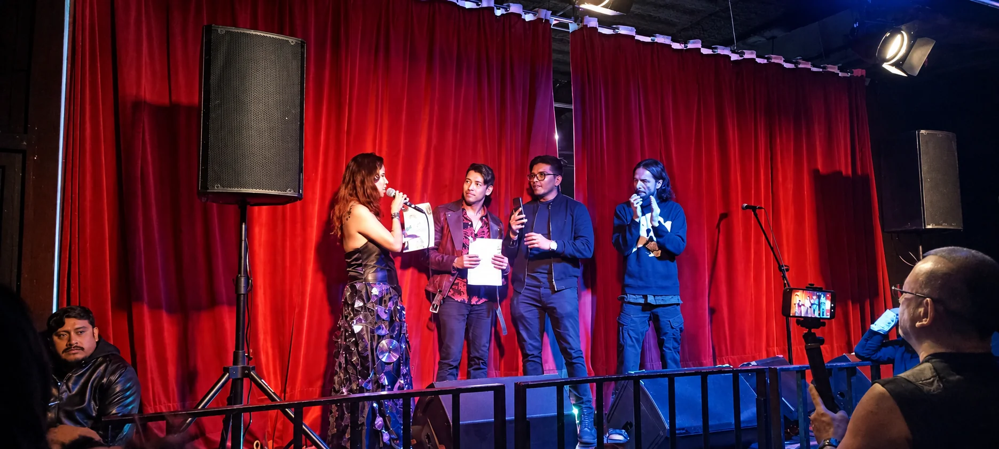
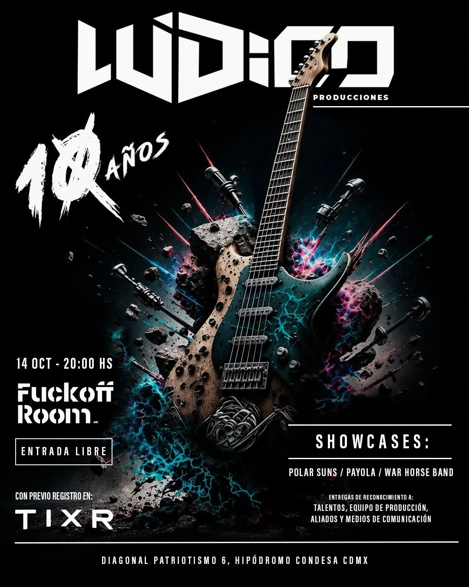
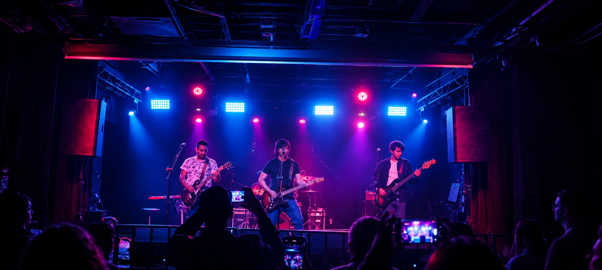
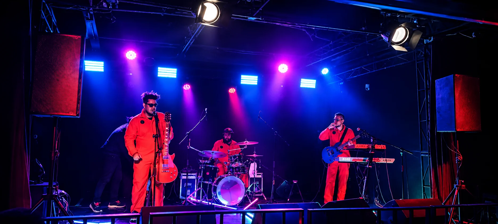
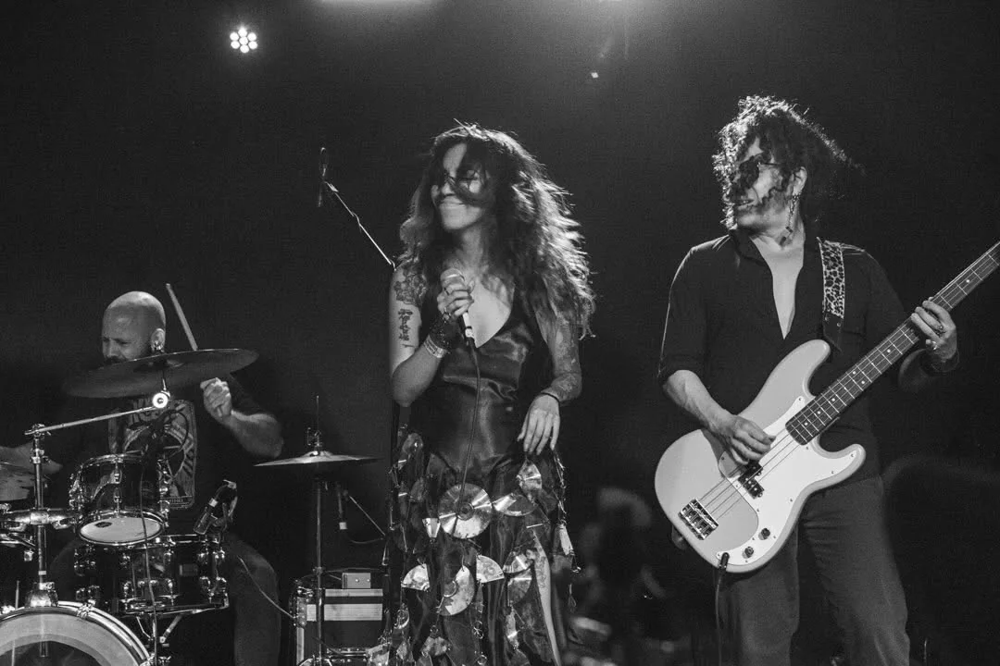

LÚDICO PRODUCCIONES
10 AÑOS IMPULSANDO EL ROCK INDEPENDIENTE
La agencia liderada por Lina Stoner conmemoró una década de trayectoria con una celebración en el Fuck Off Room de la Ciudad de México, acompañada de bandas, medios de comunicación y colaboradores que han formado parte de su historia.

La escena independiente mexicana continúa construyendo espacios para el desarrollo de nuevos talentos, y uno de los proyectos que ha contribuido a este movimiento es Lúdico Producciones, agencia de booking, prensa y management que celebra sus primeros diez años de actividad.
Fundada y dirigida por la cantautora y empresaria Lina Stoner, la productora ha desarrollado durante una década distintas iniciativas enfocadas en la promoción, representación y difusión de proyectos musicales, particularmente dentro del rock y sus diferentes vertientes.
Para conmemorar este aniversario, Lúdico reunió a músicos, colaboradores, representantes de medios y amigos de la escena en una celebración de entrada libre realizada en el Fuck Off Room, ubicado en la colonia Condesa de la Ciudad de México.

Una celebración entre música, amigos y reconocimientos
La noche estuvo marcada por las presentaciones en vivo de Polar Suns, Payola y Warhorse, agrupaciones que formaron parte de los festejos y que reflejan la diversidad de propuestas musicales vinculadas con la productora.

Uno de los momentos especiales ocurrió cuando Lina Stoner subió al escenario como invitada de Polar Suns para interpretar un tema junto a la agrupación.
La participación de la también cantante permitió mostrar una de las características que han definido el trabajo de Lúdico Producciones: la cercanía entre los artistas y quienes participan en su desarrollo profesional.
Además de los conciertos, la agencia entregó reconocimientos a medios de comunicación, colaboradores, aliados estratégicos y equipos de producción que han acompañado su trayectoria.
Más allá de una fiesta de aniversario, el encuentro se convirtió en una oportunidad para reconocer el trabajo colectivo que existe detrás de los conciertos, las giras y la promoción de la música independiente.
DIEZ AÑOS DE TRABAJO COLECTIVO
El aniversario no solo celebró a la agencia: reconoció a los medios, colaboradores, aliados y equipos de producción que sostienen los conciertos, las giras y la promoción de la música independiente en México.
Una década abriendo espacios para el rock nacional
A lo largo de estos diez años, Lúdico Producciones ha desarrollado estrategias de representación artística, relaciones públicas, promoción y organización de espectáculos, buscando ampliar las oportunidades de difusión para músicos emergentes y proyectos con trayectoria.
Entre sus iniciativas destaca La Ruta del Rock, un concepto de festival itinerante que busca llevar propuestas independientes a diferentes ciudades de la República Mexicana.

El proyecto parte de una necesidad constante dentro de la industria musical nacional: generar circuitos de presentación más allá de los escenarios tradicionales de la capital y acercar nuevas bandas a públicos de otras regiones.
Actualmente, la agencia trabaja con proyectos como Kobolt, Los Bul, Velorock y Haller, además de mantener vínculos con distintas agrupaciones y colaboradores de la escena alternativa.
Su trayectoria también refleja la importancia de las agencias independientes dentro de un panorama musical en el que la autogestión, las plataformas digitales y las presentaciones en vivo se han convertido en herramientas fundamentales para el crecimiento de los artistas.
Lina Stoner: entre la producción musical y su carrera como artista
Al frente de Lúdico Producciones se encuentra Lina Stoner, quien ha combinado su trabajo como empresaria y promotora con su propia carrera musical.
Actualmente, la cantante continúa promocionando su segundo EP, Perla Negra, una producción que explora sonidos vinculados con el stoner rock y que incluye temas como "Contacto Zero" e "Indestructible".

A esta etapa se suman sus nominaciones a los Monster Music Awards 2026, en las categorías de Mejor artista Woman Rock y Mejor productor/compositor/ejecutivo.
Estos reconocimientos representan un momento importante para una artista que ha desarrollado su carrera tanto sobre los escenarios como detrás de ellos, participando en la construcción de oportunidades para otros músicos.
Diez años de trabajo y nuevos caminos por recorrer
Cumplir una década dentro de la industria musical independiente representa un logro significativo, especialmente en un entorno donde los proyectos culturales enfrentan desafíos constantes relacionados con el financiamiento, la difusión y la disponibilidad de espacios para presentaciones.
La celebración de Lúdico Producciones también permite reconocer el trabajo de quienes, desde la producción, el management, la prensa y la organización de conciertos, contribuyen a mantener activa la escena nacional.
Con diez años de historia, una cartera de artistas en desarrollo y proyectos como La Ruta del Rock, la agencia encabezada por Lina Stoner inicia una nueva etapa de actividades.
EL ROCK TAMBIÉN SE CONSTRUYE DETRÁS DE LOS ESCENARIOS
Una década de conciertos, colaboraciones y música independiente que demuestra que el rock mexicano no solamente se construye sobre los escenarios, sino también gracias a quienes trabajan detrás de ellos.